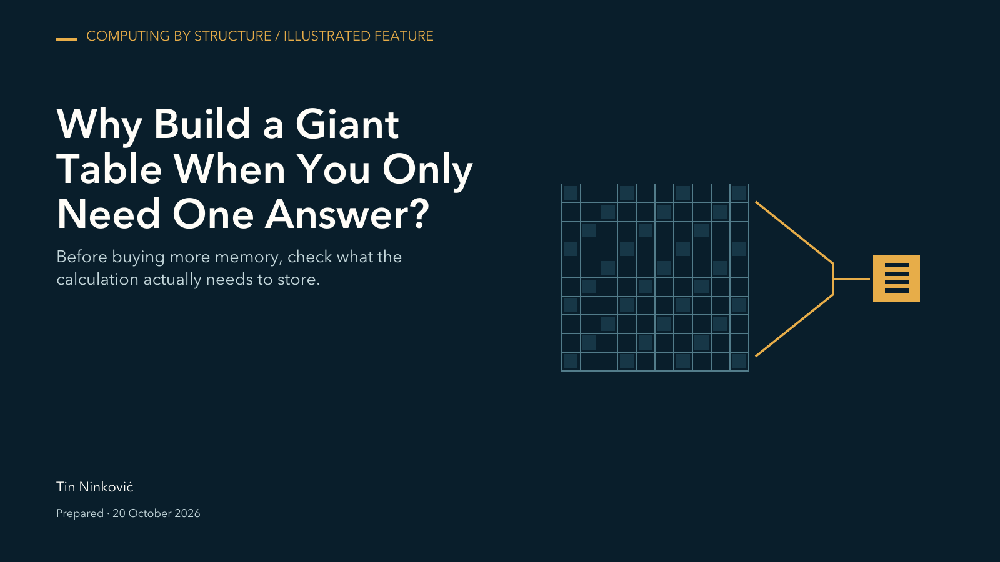

Computing by structure
Why Build a Giant Table When You Only Need One Answer?
Before buying more memory, check what the calculation actually needs to store.

What the article explains
A small worked example shows the difference between storing a table and calculating the answers it produces. The article then examines retained historical allocation measurements for one known structured calculation.
Read and inspect
Get the complete offline reader bundle: full article, illustrations, matching PDF, data, license and checksums.
Full illustrated article · The actual results, explained · Sources and availability · Publication metadata
Versioned release and checksums · Download the PDF · Download data and methods
The matching PDF
Eight pages, the same article, figures, measurements and source scope. If your browser does not show the PDF here, open it directly or download the release copy.